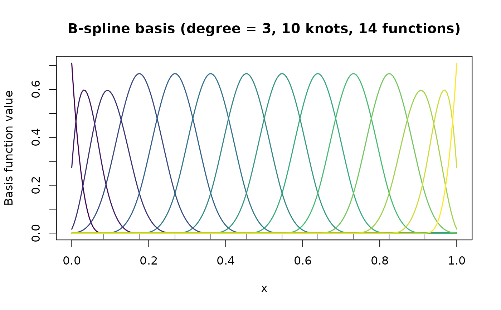

Plots all basis functions of a B-spline basis using base R graphics. Each basis function is drawn in a distinct colour.
Usage
# S3 method for class 'fda_basis'
plot(
x,
col = NULL,
lwd = 1.5,
main = NULL,
xlab = "x",
ylab = "Basis function value",
...
)Arguments
- x
An object of class
"fda_basis".- col
Character vector of colours for basis functions. Defaults to a rainbow palette with length equal to
n_basis.- lwd
Numeric; line width. Default is 1.5.
- main
Character; plot title. Defaults to an informative string.
- xlab, ylab
Character; axis labels.
- ...
Additional arguments passed to
graphics::matplot().
Examples
# \donttest{
x <- seq(0, 1, length.out = 200)
basis <- bspline_basis(x, n_knots = 10, degree = 3)
plot(basis)

# }